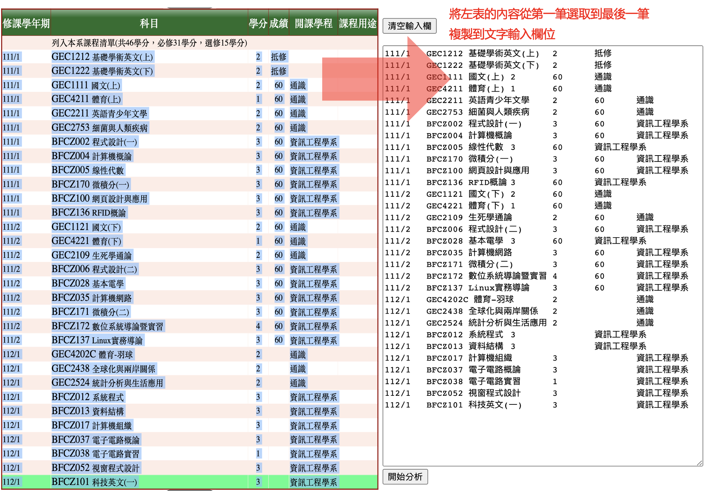

聲明：該網站架設係透過GitHub Pages，僅支援全前端的網頁碼， 因此這個網站不會紀錄任何資訊，也無法紀錄任何資訊， 所有的計算過程全部由使用者端的瀏覽器進行，請使用者放心使用。
使用說明：
- 本學分計算機僅限“國立屏東大學-資訊工程學系”的學生使用。
- 本計算機的學分計算方式是依照111年入學的“資訊工程學系-學生手冊” 中列出的科目進行學分計算，若您同樣為適用此學生手冊的學生也能夠使用本計算機。
- 本學分計算機僅能計算資工系學生手冊中條列的系必修、 系選修以及共同教育中心開設的通識課程。若您曾經修習過其他科系的課程學分加總將無法正確計算。
- 若使用者輸入的成績欄位中有“抵修”的科目，學分計算機會將該科目以60分計算。
- 有鑑於使用手機複製貼上時手機可能會自動裁切空格造成錯誤，因此請儘量使用電腦操作。
- 根據 資訊工程學系-學生手冊 第20頁的註解，以及第26頁表格右下角第二點之敘述“資訊課程資訊學院各系所不必修習，不足學分數（2學分）將由博雅教育課程補足”。也就是說對於資工系的我們來講，第19頁的博雅教育10~12學分會變成12~14學分
- 登入“國立屏東大學-學生資訊系統”
- 登入後再左邊選單點選“[A081]_線上查詢”
- 在“[A081]_線上查詢”選單中點選“[A0731S]_已修學分資料查詢”， 你就會看到所有曾經修過以及目前正在修習的課程
- 從修課學年期開始左鍵拖曳選取第一筆資料，一直到最後一筆資料的最後一個字並複製到下方的文字輸入欄 
- 最後，按下 “開始分析” 按鈕並按照指示操作，網頁就能夠幫你完成學分的計算
若可能是因爲網頁的問題導致學分的計算結果是有問題的，請讓我知道，謝謝您。